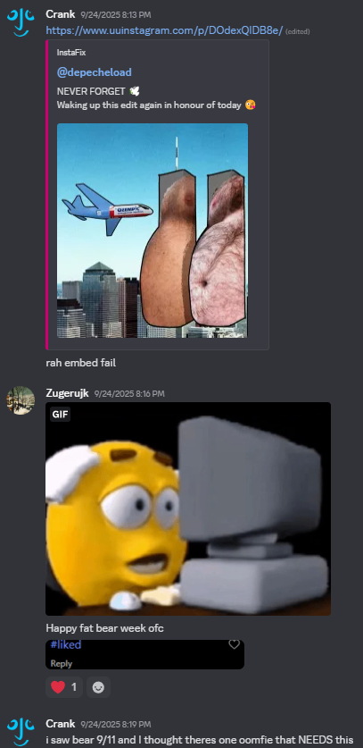

Happy Fat Bear Week‼️‼️‼️
It's fucking Fat Bear Week. It's all I see on my Twitter timeline. People have DM'd me about it. It's, you know, it's been energizing. I'm not a bear, or even fairly close, I'm quite average build, kind of on the chubby side, and I don't exercise at all, and I don't do the bear smile, though it's funny and sometimes I do do it to myself in the mirror because it's such a stupid fucking face, it's very funny. But if there's one thing I
In terms of real bears, I hope 32 Chunk wins, like, obviously. Fucking obviously, you know. Like who doesn't love 32 Chunk. He's our injured king.
In terms of other animal news, Bald Eagle 24-390's keratin is STILL FUCKING GROWINGGGGGGGGG. Like booyah, holy shit. God I love him so much. I'm so glad he's getting better.

Rare Bald Eagle 24-390 angle from the WBS med clinic website 🦅
If I don't have a boyfriend by next Fat Bear Week that may be the end of me. Because, like, as much energy as I got from that Fat Bear Week tummy tuesday... dawg, I'm so fucking single 😭😭😭 RAHG 😭😭😭😭😭😭😭😭😭😭😭😭😭😭😭😭😭😭😭😭😭😭

The kind of DMs I'm blessed to receive 🐻